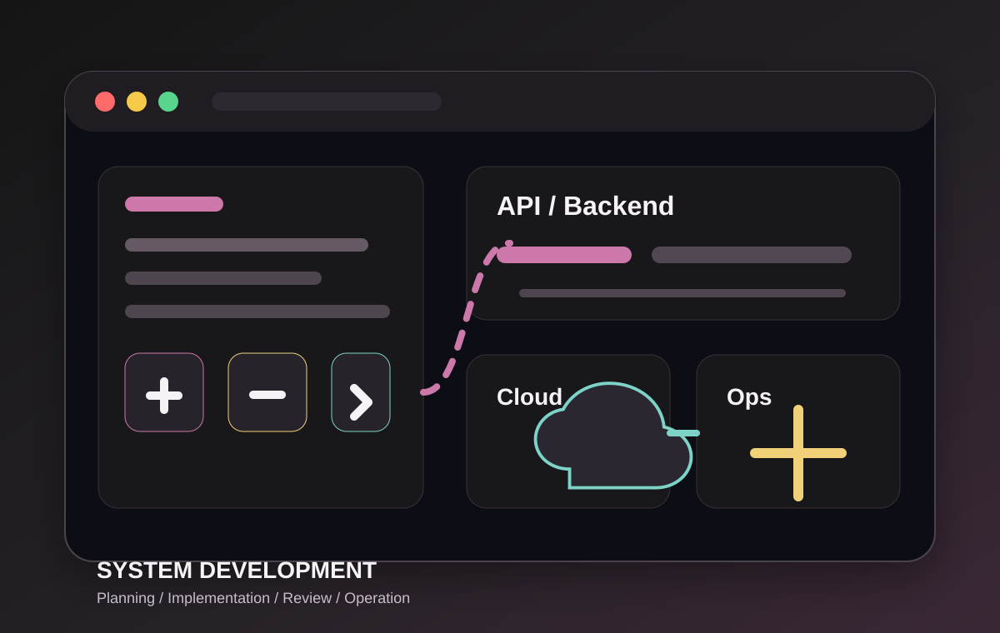

要件整理から設計まで
目的、制約、既存業務を整理し、実装に入れる粒度まで仕様を具体化します。
SYSTEM DEVELOPMENT
Webサービス、業務システム、API、インフラ、運用改善まで。 開発現場に入り込み、実装力と設計力の両面からプロジェクトを前に進めます。

WHAT WE DO
目的、制約、既存業務を整理し、実装に入れる粒度まで仕様を具体化します。
フロントエンド、バックエンド、API、業務バッチなど、プロダクトに必要な開発を横断して支援します。
クラウド、CI/CD、ログ、監視、保守性まで考慮し、長く使えるシステムに整えます。
PROCESS
開発したい内容、現在の課題、体制、希望スケジュールを確認します。
要件定義、設計、実装、レビュー、運用改善など、必要な役割を明確にします。
既存チームと連携しながら、実装と検証を進めます。必要に応じて技術選定も支援します。
リリース後の不具合対応、機能追加、運用改善まで継続的に伴走します。